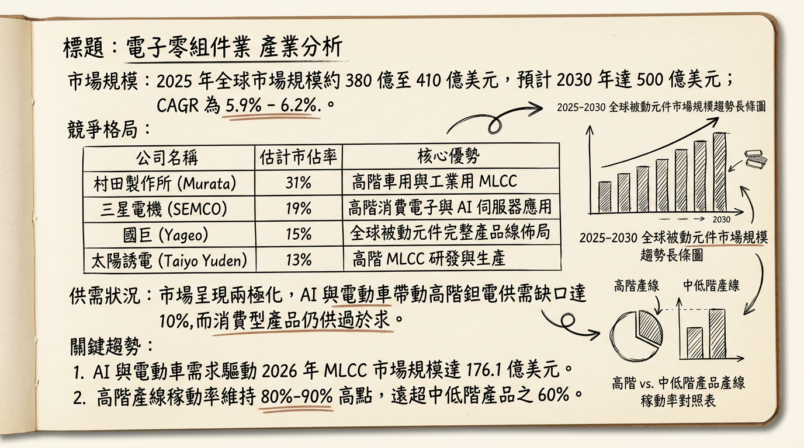
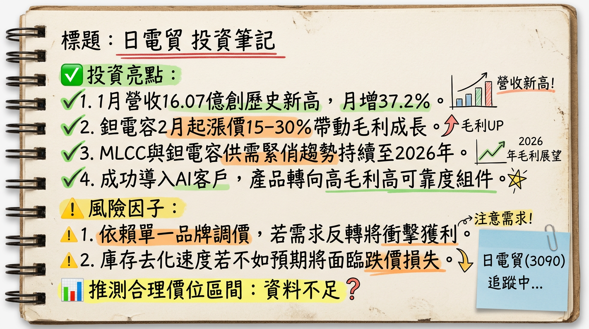

3090 日電貿 (Nichidenbo) 深度研究報告
一句話摘要
受惠 AI 伺服器規格升級與高階鉭電容漲價潮，日電貿作為全台最大被動元件通路商，正進入「量價齊揚」的獲利爆發期。公司概覽
日電貿（3090）成立於 1993 年，為台灣規模最大的被動元件代理通路商。其核心價值在於代理全球頂尖品牌（如 Samsung、Panasonic、KEMET 等）之高階元件，並提供一站式技術支援與供應鏈管理。
業務營收結構（2025 年底法說會數據）
| 代理品牌 / 產品線 | 營收佔比 | 核心應用領域 |
|---|---|---|
| Samsung (三星電機) MLCC | 38% | AI 伺服器、智慧型手機、車用 |
| Panasonic 高分子固態電容 | 14% | 筆電、伺服器電源、工業控制 |
| Nippon Chemi-Con 鋁質電解電容 | 12% | 充電樁、通訊設備、家電 |
| KEMET (基美) 高分子鉭質電容 | 11% | AI 加速器、高端 ASIC、航太 |
| Kyocera AVX MLCC/鉭電 | 8% | 車用電子、5G 基礎建設 |
| 其他及自有品牌 (KTS, UWA) | 17% | 感測元件、光電元件、電感電阻 |
核心競爭優勢
財務分析
月營收趨勢表格（最近 6 個月）
| 月份 | 營收金額 (百萬元) | 月增率 MoM | 年增率 YoY | 狀態說明 |
|---|---|---|---|---|
| 2026/01 | 1,607 | +37.19% | +13.06% | 創單月歷史新高，AI 拉貨強勁 |
| 2025/12 | 1,171 | -8.74% | +30.92% | 年底庫存調整，但 YoY 顯著增長 |
| 2025/11 | 1,283 | -5.68% | +15.38% | 換股後股本擴大，營收維持高位 |
| 2025/10 | 1,361 | -3.59% | +18.67% | 傳統旺季尾聲，伺服器需求支撐 |
| 2025/09 | 1,411 | +2.16% | +32.80% | 單季歷史次高，AI 佔比突破 18% |
| 2025/08 | 1,382 | +9.87% | +22.82% | 需求回溫，庫存周轉加速 |
季度數據摘要（2025 Q3）
- 單季 EPS： 1.97 元（YoY +60.67%）。
- 累計前三季 EPS： 4.21 元（2024 全年僅 4.52 元，顯示成長顯著）。
- 毛利率： 15.97%（受惠高毛利 AI 產品組合）。
法說會重點（2025/12/08 摘要）
- 管理層 Guidance： 總經理于耀國指出，AI 伺服器對 MLCC 與鉭電容的需求量是傳統伺服器的 10 倍 以上。預期 2026 年高階元件供需缺口仍達 10%。
- 漲價確認： 證實代理品牌 Panasonic 於 2026/02 起調漲鉭電容報價 15%-30%。
- 海外佈局： 積極擴充泰國、越南與印度據點，應對地緣政治下的供應鏈移轉需求。
券商觀點（目標價表格）
| 券商名稱 | 評等 | 目標價 | 2026 EPS 預估 | 報告日期 |
|---|---|---|---|---|
| 康和證券 | 看多 | 115 元 | 6.45 元 | 2025/12/11 |
| 兆豐投顧 | 看多 | 111 元 | 5.80 元 | 2025/12/10 |
| 法人分析師 | 中性偏多 | 104.6 元 | 6.54 元 | 2025/11/08 |
財報深度分析
利潤率趨勢表格
| 季度指標 | 2025 Q3 | 2025 Q2 | 2025 Q1 | 2024 Q4 |
|---|---|---|---|---|
| 毛利率 (%) | 15.97% | 14.48% | 15.52% | 14.90% |
| 營業利益率 (%) | 9.34% | 9.12% | 8.85% | 8.20% |
| 存貨週轉天數 | 55.76 天 | 54.20 天 | 67.31 天 | 75.61 天 |
- 存貨分析： 存貨天數由 2024 年底的 75.6 天顯著降至 55.7 天，顯示去庫存完全結束，轉為健康的備貨循環。
- 資本支出： 2025 Q3 單季約 1,449 萬元，主要用於數位倉儲系統升級及東南亞分支機構。
股權異動與資本結構
產業分析
競爭格局比較表格（2025 全年估計數據）
| 公司名稱 | 主要核心業務 | 2025 估計毛利率 | AI 營收佔比預估 | 優勢短評 |
|---|---|---|---|---|
| 日電貿 (3090) | 被動元件通路 | 15.5% - 16% | 20% - 25% | 全台最大，代理日韓頂尖品牌 |
| 增你強 (3028) | 半導體/零組件 | 7% - 8% | <10% | 產品線雜，毛利較低 |
| 蜜望實 (8043) | 太陽誘電代理 | 11% - 12% | 40% | 代理線單一，AI 彈性大但風險高 |
近期催化劑
- 利多： 2026/02 鉭質電容正式生效的 15%-30% 漲價 效益。
- 利多： NVIDIA GB200/300 伺服器量產，帶動 01005 規格 MLCC 需求爆發。
- 利空： 2026 H1 若 HBM 記憶體缺貨，可能拖累伺服器出貨天數，間接影響零件拉貨。
⭐ 成長動能時間軸
- 2025 Q4： 完成與文曄股權交換，確立全球通路擴張戰略。
- 2026 Q1： 1 月營收創歷史新高（16.07 億元）；2 月起受惠 Panasonic 漲價效益。
- 2026 Q2： 實體 AI（Embodied AI）與人形機器人新客戶導入，高階感測電容開始出貨。
- 2026 H2： 東南亞（泰國、越南）物流中心完工，服務區域延伸至印度市場。
2026 展望
成長動能： AI 伺服器規格由 GPU 轉向 ASIC 雙軌發展，帶動特製化電容需求。預估 2026 年 AI 相關營收佔比將突破 25%。 風險因子： 台幣匯率波動（2025 Q2 曾出現 1.79 億元匯損）；美對中貿易關稅變動對 ODM 廠產地轉移的影響。投資結論
本報告由 AI 自動產生，資料來源為公開網路資訊，僅供參考，不構成投資建議。
產生時間：2026-03-01 21:33
📊 資訊卡


